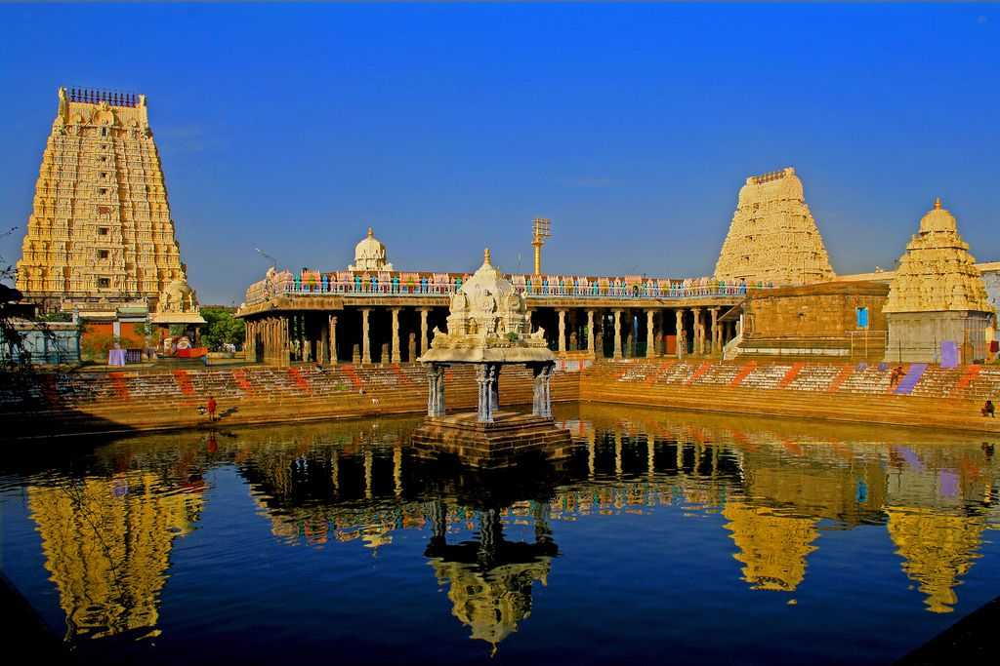

Timeless Gems of Tamil Nadu: History and Legacy
“Gems may shine brightly, but their true brilliance is found in the history and culture they represent."
Welcome to a journey through Tamil Nadu’s storied past, where history and elegance shine through its extraordinary gems. Our site is dedicated to exploring the captivating legacy of Tamil Nadu’s historic jewels, each a testament to the artistry and craftsmanship of ancient times. Delve into the intricate designs and vibrant stories behind these precious stones that have adorned kings, queens, and dignitaries throughout history. From the majestic gems of the Chola and Pandya empires to the exquisite treasures of Tamil Nadu’s rich cultural heritage, immerse yourself in the grandeur and mystique that continue to enchant and inspire. Experience the allure of history through the brilliance of Tamil Nadu’s most cherished gems.
Experience the Majesty of These Remarkable Temples During Your Next Holiday
1. Brihadeeswarar Temple (Thanjavur)
Constructed between 1003 and 1010 AD by Raja Raja Chola I, the Brihadeeswarar Temple in Thanjavur stands as a monumental achievement of Chola architecture. Dedicated to Lord Shiva, the temple features a towering central dome, intricate carvings, and a massive Shiva Lingam, showcasing the zenith of Chola architectural and artistic excellence. Its grandeur reflects the power and devotion of Raja Raja Chola I, who sought to create a lasting legacy through this magnificent edifice.
The Brihadeeswarar Temple is celebrated as a UNESCO World Heritage Site, recognized for its historical and architectural significance. Its innovative design and massive scale have influenced temple architecture throughout South India. The temple continues to be a vibrant center of worship and cultural heritage, attracting scholars, pilgrims, and visitors who marvel at its enduring beauty and historical importance.
Architectural Features:
1. Main Shrine: Houses one of the largest Shiva Lingams in India.
2. Vimana: The massive central dome stands about 66 meters tall.
3. Nandi Bull: A huge statue carved from a single stone, facing the main shrine.
Cultural and Religious Significance:
1. Religious Importance: Major pilgrimage site dedicated to Lord Shiva.
2. Festivals: Hosts significant events like Maha Shivaratri.
Explore more about the Brihadeeshwara Temple and its rich history.
2. Sri Ranganatha Swamy Temple (Srirangam)
The Srirangam Temple, located in Srirangam near Tiruchirappalli in Tamil Nadu, is one of the most revered and expansive Hindu temples dedicated to Lord Vishnu, specifically his form as Ranganatha. This ancient temple, with origins tracing back over two millennia, is an important pilgrimage site within the Vaishnavism tradition. Its history is marked by extensive contributions from various South Indian dynasties, including the Cholas, Pandyas, and Vijayanagara kings, who significantly expanded and embellished the temple complex. The temple’s architecture showcases grand gopurams (gateway towers), intricate sculptures, and vast courtyards, reflecting its rich historical evolution and the enduring devotion of its patrons.
The legacy of the Srirangam Temple extends beyond its architectural grandeur to its profound cultural and spiritual impact. As a central hub for Vaishnavite worship, the temple is celebrated for its elaborate rituals, festivals, and its role in the preservation of Tamil devotional literature and practices. It is a focal point for the dissemination of the teachings of the Alvars, early Tamil saints whose hymns form a critical part of the temple's religious tradition. Today, the Srirangam Temple remains a vital center for both pilgrimage and cultural heritage, continuing to influence religious practices and artistic expressions in South India while drawing millions of devotees and visitors annually.
Explore more about the Srirangam Temple and its rich history.
3. Thillai Natarajar Temple (Chidambaram)
The Thillai Nataraja Temple in Chidambaram, Tamil Nadu, is a seminal site in Hindu worship, renowned for its representation of Lord Shiva as Nataraja, the cosmic dancer. Established over 2,000 years ago and significantly expanded by the Chola dynasty, the temple's architecture showcases intricate Dravidian design with elaborately carved gopurams and pillared halls. The temple is famed for the Chidambara Rahasya, where Lord Nataraja is symbolically represented by an empty space covered by a golden box, signifying the formless aspect of the divine.
Two notable points about the Thillai Nataraja Temple are:
Architectural Marvel: The temple's grand Dravidian architecture and detailed sculptures reflect the artistic achievements of the Chola and Pandya dynasties, making it a masterpiece of South Indian temple design.
Cultural Influence: The temple is a central hub for religious festivals like the Natyanjali Dance Festival, influencing Tamil literature, classical dance forms such as Bharatanatyam, and continuing to attract devotees and artists worldwide.
4. Meenakshi Amman Temple (Madurai)
.jpg)
The Meenakshi Temple in Madurai, Tamil Nadu, is a monumental example of Dravidian architecture and spiritual devotion, with its origins dating back to the 6th century CE. The temple gained prominence during the Pandya dynasty and saw significant expansion under the Nayak rulers in the 16th to 18th centuries. Renowned for its towering gopurams (gateway towers) and intricate sculptures, it showcases the elaborate craftsmanship and architectural grandeur typical of South Indian temples. The temple's extensive network of halls and mandapams, particularly the Meenakshi Nayakar Mandapam, highlights its historical development and artistic richness.
Beyond its architectural splendor, the Meenakshi Temple holds immense cultural and religious significance. It serves as a major pilgrimage site, drawing thousands of devotees and tourists annually, especially during the grand Meenakshi Thirukalyanam festival. The temple's influence extends to the local economy, supporting various businesses and contributing to the cultural identity of Madurai. Preservation efforts continue to ensure that the temple's heritage and legacy remain intact for future generations.
Explore more about the Meenakshi Amman Temple and its rich history.
5. Rameswaram Temple (Rameswaram)

The Rameswaram Temple, situated on Rameswaram Island in Tamil Nadu, is a significant Hindu pilgrimage site dedicated to Lord Shiva. Its history is deeply intertwined with the epic Ramayana, as it is believed to be the location where Lord Rama worshipped Shiva to atone for the sin of killing Ravana. The temple's origins are traditionally attributed to the 12th century, though it underwent substantial renovations and expansions during the reign of the Nayak dynasty in the 17th century. The temple is renowned for its expansive corridors and intricate architectural design, including its towering gopurams and numerous sculpted pillars, which reflect the grandeur of Dravidian temple architecture.
The Rameswaram Temple holds a profound legacy as a vital center of religious activity and cultural heritage. It plays a central role in the lives of countless devotees who visit to seek blessings and perform rituals, particularly the traditional ritual of "Jalabhishek," where pilgrims offer water from the holy sea. The temple's significance is amplified by its location in the sacred city of Rameswaram, a key site in the pilgrimage circuit known as Char Dham, which includes Badrinath, Dwarka, and Puri. The temple's ongoing cultural and religious practices, combined with its architectural splendor, ensure its enduring legacy as a beacon of faith and tradition.
Explore more about the Rameswaram Temple and its rich history.
6. Sri Kanchi Kamakshi Amman Temple (Kanchipuram)

The Sri Kanchi Kamakshi Amman Temple, located in Kanchipuram, Tamil Nadu, is a prominent Hindu temple dedicated to Goddess Kamakshi, a form of Parvati. With roots dating back over 1,500 years, the temple has been a significant center of worship and learning throughout various historical periods. The temple's origins are attributed to the early Pallava dynasty, with substantial expansions and renovations carried out by later rulers, including the Cholas and the Vijayanagara emperors. Its architecture exemplifies the Dravidian style, featuring a grand entrance tower (Rajagopuram) and intricately carved mandapams (pillared halls) that showcase the craftsmanship of the era.
The legacy of the Kamakshi Amman Temple extends beyond its architectural grandeur. It has played a pivotal role in the religious and cultural life of South India, serving as a key site for Shaiva and Shakta worship. The temple is associated with the revered philosopher Adi Shankaracharya, who is believed to have established the Kamakoti Peetham, a significant seat of spiritual learning, here in the 8th century. This connection has cemented the temple's status as a center of Vedantic study and devotional practice, making it a beacon of spiritual and cultural heritage that continues to attract devotees and scholars.
"Authored by S. Saumiya, 2nd-year B.Tech IT student.